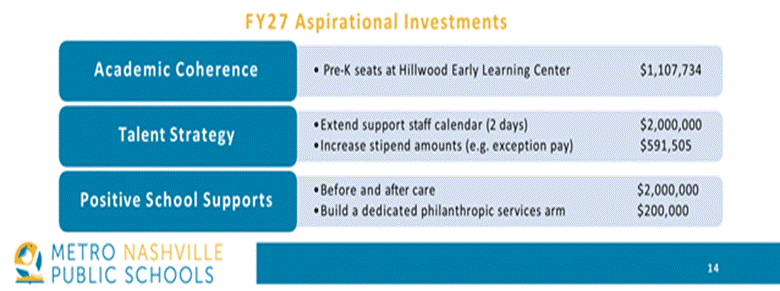
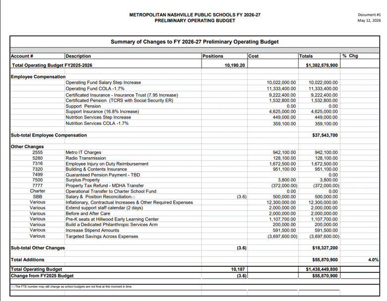
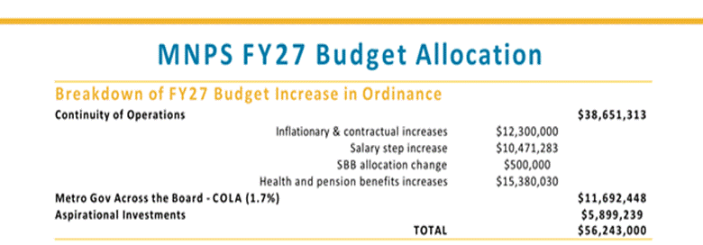
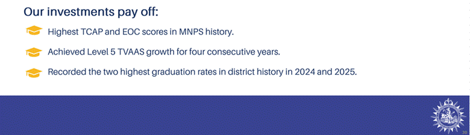
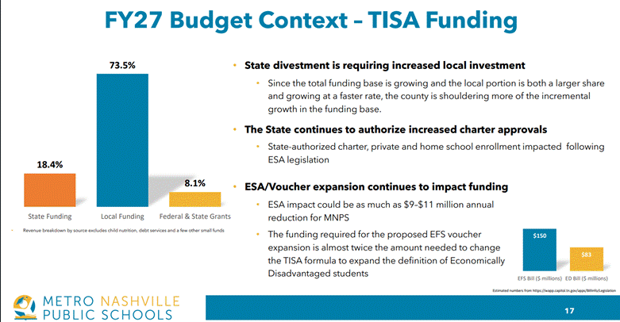
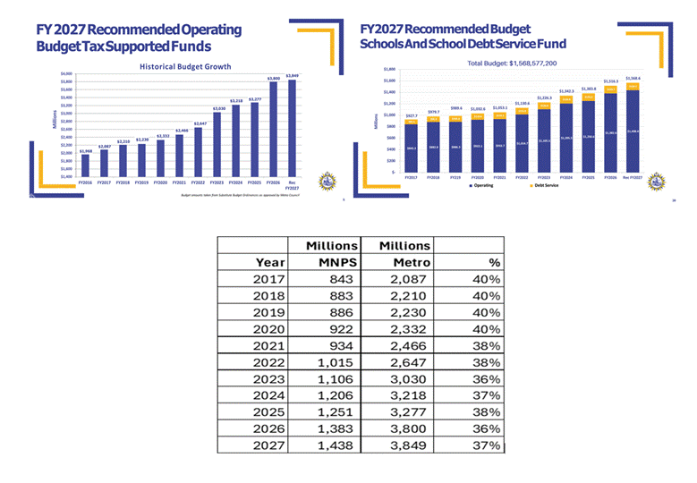
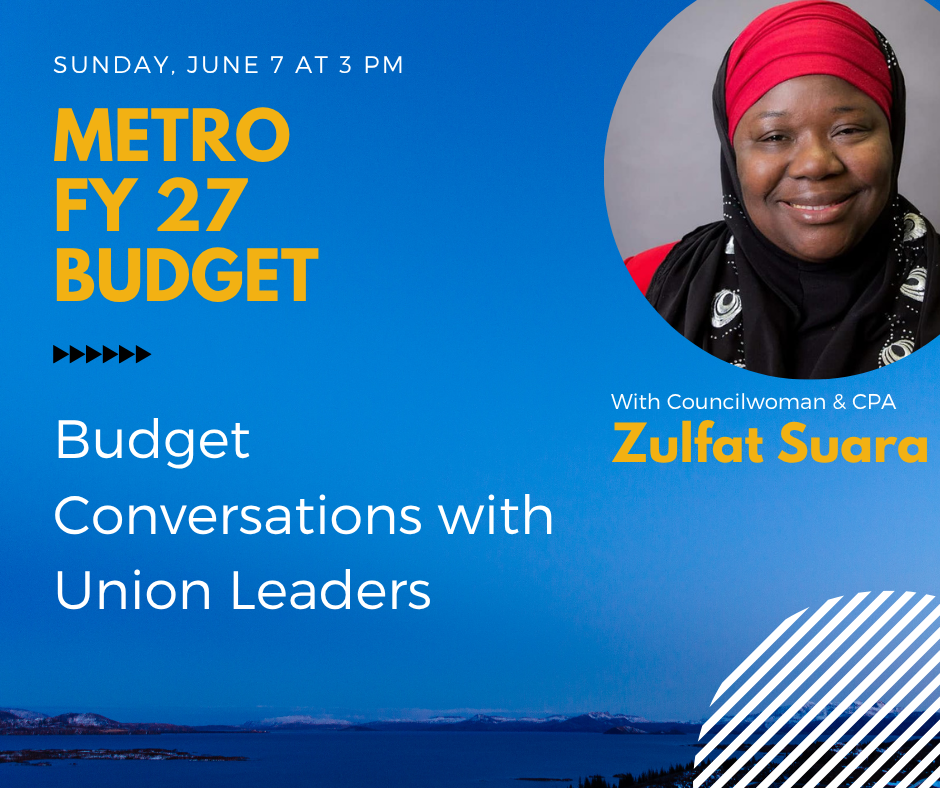

Understanding MNPS Budget
Hello, everyone! I hope you all have had a productive and peaceful week. Thank you to everyone who tuned in to our earlier budget conversation, where we broke down the overall Metro budget. If you miss it, you can catch up here. This week, we shifted focus to an area that always remains close to my heart and central to our city’s future: our children’s education.
I had the pleasure of hosting Dr. Berthena Nabaa-McKinney, the Budget Chair for Metro Nashville Public Schools (MNPS). Dr. Nabaa-McKinney walked us through the preliminary FY27 school district budget and spent significant time addressing your questions about teacher compensation, environmental priorities, school investments, and transparency in how funds are used.
As always, I want to make sure you have the information you need to understand what’s happening, what’s being proposed, and how you can engage.
Celebrating MNPS Achievements

Before we jump into the dollars and details, let’s celebrate the incredible strides MNPS has made.
Dr. Nabaa-McKinney shared that MNPS has now achieved four consecutive years as a Level 5 district, the highest designation the state assigns for student growth. This is not just a small milestone — it is historic. For the first time, MNPS has sustained this level of achievement over multiple years, marking consistent progress in academic performance, student readiness, and teacher effectiveness.
MNPS has also seen record-breaking TCAP scores and double‑digit increases in proficiency since 2021, even as districts across the country continue to struggle with post‑pandemic recovery.
These achievements are a testament to:
- our hardworking teachers and staff
- our committed school leaders
- our resilient students
- our supportive families and community partners
We should be proud—and continue to invest in this momentum.
Breaking Down the MNPS FY27 Budget
MNPS has submitted a preliminary FY27 operating budget request of $1.4 billion to Mayor O’Connell, representing a 4-5% increase from the previous year. While this might sound like a substantial sum, it’s important to understand how the money is allocated and the constraints on its use. Dr. Nabaa-McKinney broke down the budget into three main categories that help illustrate where these dollars will go and why each component is essential.
This amount includes $1.382 in baseline funding (FY26 funding) plus $56M in new funding, for a total of $ 1.4 billion.

The above details show that employee salaries and benefits account for 67% of the additional funding, totaling $37.5M. Other major categories include Inflationary adjustment $12M or 21%, and the FY 27 aspirational budget of $5.8M or 10%
Understanding MNPS Budget Process
What is the MNPS budget process?
The process starts with the baseline funding, which is the prior year’s amount. The baseline is then adjusted for inflation, assuming that operations remain the same. The final step is adding new programs or concepts, also known as aspirational funding/ The new programs are termed aspirational until approved by the Metro Council. Using the budgeting process, here is the breakdown of the FY 27 requested funding
- $1.382 billion – Baseline- FY 26 -Operating Budget
- $38.3 million – Adjustment- to maintain current services
- $11.9 million – Cost of Living Adjustment – COLA
- $5.8 million f- New/aspirational investments
Why does MNPS funding start with the prior year or baseline amount?
The budget starts with baseline funding because 2 concepts yield the same result. The first concept is Continuity of Operations (COO), and the other is Maintenance of Effort (MOE). The MNPS school district starts its budget with prior-year numbers under the continuity of operations concept. This concept reflects the cost to MNPS of maintaining the current level of operations. MNPS starts with the amount of budget from last year to ensure that essential programs and services from the prior year are maintained
The second concept is the state-mandated Maintenance of Effort. Tennessee’s maintenance-of-effort laws ensure that local funds budgeted for schools do not decrease as state funding increases. County commissions, city councils, and special school districts must budget at least the same total dollars for schools as they did the previous year to comply with maintenance-of-effort laws. While the MOE can be reduced when enrollment decreases and in 3 other exceptions, Metro continues to invest in MNPS to make up for years of underfunding and to account for inflation.
COO is a school district plan/policy, while MOE is a state law/mandate

What are the other components of the FY 27 budget?
Continuity of Operations (COO) Adjustment
The next step in the budget process is the COO adjustment, in which part of the new funding is used to maintain the prior year’s level of services. The baseline amount is adjusted for inflation, contract increases, insurance premium changes, and cost‑of‑living adjustments. The continuity of operations adjustment to meet the same level of service as last year accounts for $38.3 million of the total budget request. This isn’t discretionary spending. This adjustment ensures that existing programs and services continue without interruption. Still, it also means that a significant portion of the budget increase (68% – $38M/$56M) is already spoken for before we can even consider new initiatives or enhanced services.
The Cost-of-Living Adjustment (COLA):
The second major component of the $56M increase is the 1.7% COLA for all MNPS employees, which costs approximately $11.9 million. It’s also worth noting that the 1.7% COLA figure is tied to maintaining parity with Metro government employees’ COLA percentages. This parity principle ensures that school district employees aren’t treated as second-class compared to other Metro employees. However, many argue—and I agree—that this percentage still doesn’t adequately address the rising cost of living in Nashville. Dr. Nabaa-McKinney emphasized that MNPS will continue to advocate with the Metro Council for increased COLA funding.
Aspirational Investments:
The third, and perhaps most exciting, component of the budget is the $5.8 million allocated to aspirational investments. These are the programs and initiatives that move us beyond simply maintaining the status quo and toward building the district we aspire to become. Dr. Nabaa-McKinney presented a comprehensive list of priorities within this category, including:
Additional Pre-K Seats: Expanding access to high-quality early childhood education is one of the most proven investments we can make. Research consistently shows that children who attend quality pre-K programs enter kindergarten better prepared for academic success, with benefits that compound throughout their educational journey. The requested funding would allow MNPS to serve more families and ensure that Nashville’s youngest learners get the strong start they deserve.
Extended School Days and Before/After Care Programs: Many Nashville families struggle with the logistical challenges of school schedules that don’t align with work schedules. Extended days and comprehensive before and after-care programs address this practical need while also providing additional learning time and enrichment opportunities for students. These programs are particularly crucial for working families and single parents who often face difficult choices between career advancement and childcare coverage.
Staff Stipends and Recruitment Initiatives: Attracting and retaining talented educators remains one of our greatest challenges. While MNPS already boasts the highest-paid teachers and staff in Tennessee, as Dr. Nabaa-McKinney proudly noted, talent competition extends beyond state borders. Strategic compensation enhancements, signing bonuses, and retention incentives can make the difference in building and maintaining a world-class teaching force.
Extend Support Staff – 2 additional days. This is a major win for MNPS support staff, who have been advocating for additional pay days. This allocation directly compensates support staff for additional work time.
Where can I find the details for the full $1.4billion?
The details for the full $1.4 billion are available in 2 places. First, since the baseline amount is the FY26 budget, the details of the $1.382 billion are in the FY 2026 budget book. The budget book is completed after the Metro Council votes, and the budget amount for each year is finalized.
The details can also be found in the FY27 preliminary operating budget located here. MNPS conducted 10 listening sessions throughout the county to discuss the budget details. In addition, the expense details for the $1.4 billion were presented to council members at a special meeting and shared with the council. Community members needing additional information should contact their school board members.
Click here to access MNPS ‘ detailed budgets for the last 10 years
Why does Metro continue to increase MNPS funding despite a decrease in enrollment?
This is a question, and there are many reasons. Below are some of the reasons from my viewpoint as a second timer
1. Catch-up funding.
MNPS was historically underfunded when compared to other districts. Staff were underpaid, and students lacked enough textbooks. To improve the quality of education and invest in our students, as well as teachers and support staff. Mayor Cooper and Mayor O’Connell, along with the council, have increased investment in MNPS over the years, resulting in greater funding. Below are some examples:
- $67.4M increase in compensation, with $44M in pay increases for teachers, making Nashville teachers the highest-paid in the state. Click here to see details
- Annual COAL and step increases to match Metro employees
- $2.5 million funding for advocacy centers in all schools
- $15M – pay increase for transportation, paraprofessional, and nutrition staff to increase retention
- FY 23- $5M paid Faily leave
- FY23- $22M shortage in state funding
- $65M in ESSR funding, which included Scholars Portfolio ($24M): High-dosage tutoring, Saturday programming, and the Promising Scholars summer initiative. And College & Career Pathways ($6.3M): Early-college models and full-ride partnerships with local universities, plus summer stipends.
- Adjusting MNPS COLA to match Metro
- $18M investment in textbooks- ensuring there are enough textbooks for every student
These investments have paid off. MNPS has been a level 5 school for the past 4 years. MNPS now has record graduation rates with lots of students receiving scholarships. MNPS now has scholar programs with Vanderbilt, Belmont, UTK, TSU, and Trevecca. One of my favorite stories was last year, when 49 MNPS students received a full ride to Vanderbilt-

2. Funding Challenges: State Disinvestment, Vouchers, and Charter Growth
One of the most striking parts of our conversation was the extent to which the State of Tennessee underfunds MNPS.
Here’s the reality:
- Across Tennessee, the average state funding for public schools is 75%, with local government providing the remaining 25%.
- In Nashville, the reverse is true and the state portion continues to go down. State provides only 18%, while local taxpayers cover 74%.
- The impact is that when the state reduces its funding, the difference is made up by Metro.
This is a structural inequity that impacts every budget cycle. Dr. Nabaa-McKinney shared additional concerns:
1. Voucher Expansion
Vouchers divert public funds to private schools. Each expansion decreases the pool of funds available to MNPS and other public school districts.
2. Charter School Growth
Charters also draw from the MNPS budget, requiring the district to provide transportation, facilities support, and per‑pupil funding.
3. Economically Disadvantaged Student Classification
Because Nashville is classified as an “urban” district, it receives fewer state dollars—despite having economic disparities similar to rural districts.
The district is working to revise the definition of “economically disadvantaged” so that students receiving Medicaid or Medicare, not just SNAP, can be counted. This change could increase state funding.

3. % Funding have actually gone down
MNPS funding is actually down. While MNPS funding has increased in dollar amounts over the years due to the investments above, the % of funding has actually decreased. It is important to note that over the last 10 years, while MNPS funding increased, so did Metro’s total budget. The same goes for other major departments, such as police, fire, and sheriff. This increase in spending is attributable to higher costs and inflation, as well as the costs of a growing city. Therefore, looking at MNPS funding in isolation is misleading. Below is a breakdown of MNPS funding as a percentage of Metro total expenditures for the past 10 years.

As the diagram shows, while the dollar amount has decreased, MNPS’s share of funding from the Metro budget has decreased from the historic 40% in earlier years.
4. Major fluctuation in 2026:
It is important to note that MNPS enrollment has consistently fluctuated between 81,000 and 82,000 students over the past five years. This pattern reflects the district simultaneously gaining new students while others chose different school options. A significant dip in enrollment did not occur until January 2026. It remains essential to continue monitoring these trends to ensure thoughtful, all factors considered, data‑driven decisions about school funding.
Questions, Concerns, and Clarifications
Question: Can the COLA be increased beyond 1.7%?
This was one of my primary questions, as I’ve heard from many educators who feel that 1.7% doesn’t adequately address the rising cost of living in Nashville, particularly given the skyrocketing housing costs in recent years. Dr. Nabaa-McKinney explained that the 1.7% COLA would cost approximately $12 million and that every additional percentage point would require several million more. While she acknowledged that a higher COLA would be ideal, the reality is constrained by available funding. The district will continue to advocate for increased COLA funding, but ultimately, this depends on the Metro Council’s final budget decisions. This is precisely why community advocacy is so important—when council members hear from constituents about the need for better teacher compensation, it strengthens our hand in budget negotiations.
Question: While COLA is 1.7%, insurance has increased by 7.95%.
The 1.7% COLA has raised concerns among teachers and community members who point out that insurance premiums have increased by approximately 7.95% this year. On the surface, this suggests that our educators are falling behind, and I share that concern deeply.
However, Dr. Nabaa-McKinney provided important context that helps us understand the full compensation picture. While the COLA is 1.7%, Metro schools cover 75% of the insurance premium increase, significantly reducing employees’ out-of-pocket costs. Additionally, most teachers also receive step salary increases based on their experience and education levels. When you combine the COLA with these step increases, the total compensation increase for many teachers significantly exceeds the insurance cost increases. To put it in context, a 1.7% COLA and a 2% step increase for a teacher making $56K is $80 per pay period, while the increase in insurance is $13 for the employee-only plan.
It should be noted that the insurance increase for support staff exceeds 7.95%. The reason is that support staff are classified as Metro employees and are covered by the same insurance.
Question: What about the bathroom renovation controversy?
Some of you submitted questions about the recent renovation of the superintendent’s office bathroom.
Here are the facts shared by Dr. Nabaa-McKinney:
- The renovation was part of a larger facilities refresh project that began before the current superintendent was hired.
- It was funded through accumulated contingency funds — not operating dollars, not classroom funds, and not money that could have been used for salaries.
She emphasized that she understands the public concern and is committed to responsible stewardship of every tax dollar.
Question: Why isn’t environmental sustainability a higher priority?
Many of you asked about the future of environmental sustainability initiatives in MNPS — including recycling programs, energy audits, and districtwide environmental stewardship.
Here’s where things stand:
- MNPS once had a full-time sustainability coordinator, funded through a grant that is no longer available.
- That grant’s expiration left the district without dedicated sustainability staffing.
- MNPS is now advocating for a sustainability position and expanded environmental initiatives, but these items are currently in the aspirational budget, not the funded budget.
I asked whether these initiatives could be prioritized, and Dr. Nabaa-McKinney noted that while MNPS strongly supports sustainability, the district must prioritize compensation and continuity of operations before expanding new initiatives.
If you missed this Budget Conversation, you can watch the entire episode at the link below.
NEXT BUDGET CONVERSATION
Today’s conversation is cancelled as I was not feeling well during the week. My apologies. The conversation will resume next Sunday June 7th with union leaders. Join us on Facebook live at https://www.facebook.com/CouncilmemberZulfatSuara/ with your questions & comments.


Final Thoughts
Thank you to everyone who has taken the time to learn, ask questions, and stay engaged throughout this year’s budget cycle. Our recent conversation with Dr. Berthena Nabaa‑McKinney underscored an important truth: MNPS is making real, measurable progress because of sustained investment, strong leadership, and the dedication of our teachers, staff, students, and families.
At the same time, we face significant challenges. State underfunding, rising costs, and the impact of vouchers and charter growth continue to place a heavy burden on Nashville taxpayers. Understanding this context is essential as we evaluate the FY27 budget and determine what it will take to maintain momentum.
Transparency and accountability remain my priorities. I encourage you to review MNPS budget materials, attend community meetings, and stay connected with your school board representatives. An informed community strengthens our ability to advocate for the resources our students deserve.
Many questions about MNPS arise simply because people don’t always know where to find information or understand the history behind today’s decisions. I welcome these questions—accountability builds trust. My goal is not to discourage inquiry, but to provide the context needed to better understand the budget process.
During my first term as Education Chair, I established quarterly meetings between the Metro Council and the MNPS Board, and I believe reinstating that practice would strengthen communication and oversight. MNPS has expanded its community engagement efforts, and additional touchpoints with the Council would only enhance that work. I also encourage everyone to look beyond the headlines and explore the full MNPS budget page for deeper information.
MNPS has shown what is possible when we invest boldly and consistently. Let’s continue working together to ensure every student in Nashville has access to a high‑quality education and every educator has the support they need to succeed.
Thank you for staying informed, involved, and committed to our city’s future.